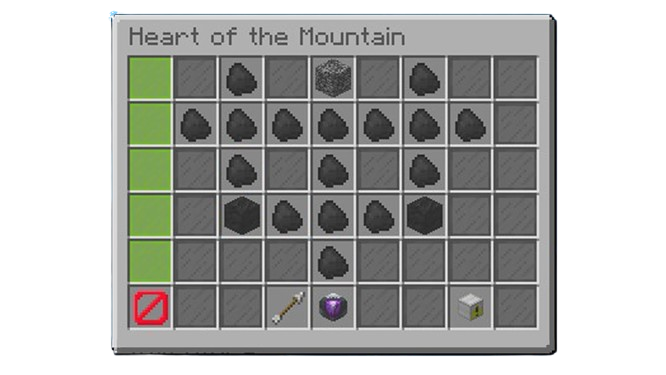
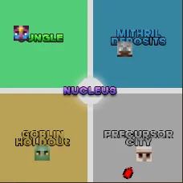

Mining is quite an interesting skill: it contains many unqiue aspects and in some senses can be extremly different from the normal game we know. Mining is the ONLY aspect of Skyblock where you can actually mine through blocks and into the map in the Crystal Hollows, which I will expand on in this segment.
What is so unqiue in Mining? How does it work?
Heart of the Mountain Tree
The Crystal Hollows
Tick-Speed Thresholds
Minging Fortune
This is all the 'general intricacies' as mentioned at the home page! I'll be talking about it all as breif yet detailed as I can, and then move to everything else mentioned in the home page.
Heart of the Mountain
The Heart of the Mountain tree (HOTM tree) is a skill tree with upgradable features such as mining speed, mining fortune, new items, and more. HOTM starts at (technically) level 0, and you can level it up all the way to level 10, where you unlock everything! To level up you need to do commissions, which you can get from the King NPC. Commissions are tasks such as mining 250 of a certain block, or defeating 50 minor enemies.
This is an image of the HOTM tree, each piece of coal is a locked part of the tree that has not been unlocked,the blocks of coal are special abilities like a 250% mining speed boost, or a mining fortune increase based on how many blocks you break.

The Crystal Hollows
The Crystal Hollows are a place unlocked at HOTM 3, where after entering a minecart, you get to a place where you can find mainly gemstones, but also the Crystal Hollows contains 4 regions, the Jungle, Mithril Deposits, Goblin Holdout, and finally, the Precursor City.

What is the purpose of these regions? Why is the Crystal Hollows different?
The main purpose of these regions is to collect there respective gemstone crystals! This is because after collecting all the crystals, you can get random loot ranging from a decent pickaxe, to a Divan's Alloy Something worth nearly 1.5 BILLION coins.
Moving from that - The main difference that the Crystal Hollows introduces is the ability to mine through the map! This might seem slightly arbitrary, but since Skyblock isn't a sandbox like Minecraft itself, players have no other region where they can mine 99% of shown blocks, besides that main regions to prevent a situation where a needed structure is not able to be used for the purpose it serves.
Tick Speed Thresholds & Mining Fortune
Mining is a skill based on the two aspects above; how low of a tick speed threshold you reach, and how high of a mining fortune stat you have.
A tick speed threshold is in the design of the game itself, it works that as you hit a certain mining speed, you will exceed the speed you break a block by a single tick (1/20th of a second). These thresholds are easy to break through at first, but as you get lower and lower, into the 20-4 tick threshold, you need thousands of mining speed to surpass a single tick. This contradicts what most people assume at a basic level, that a higher mining speed will ALWAYS equal a lower block breaking time. This is untrue as mining speed goes directly into breaking the next tick speed barrier, but until you hit it, you will always remain at the level you are at. ex.- 1000 MS (mining speed) = 20 ticks, 1120 MS = 19 ticks, anything from 1000 and 1119 will keep you at 20 ticks, no matter how close.
Now to Mining Fortune (MF).
MF is the stat the increases the amount of item you get after breaking a block. Imagine you break a single piece of gold ore, with the base of 100 MF, you would get 100% of the drops you would normally get from gold ore, which lets say is 1 gold. If you increase your MF to 250, now you would get 200% of drops you would normally get, and a 50% chance to get an extra drop, leading to either 2 or 3 gold per ore broken. Its quite simple, but this stat is argueable better and harder to achieve than mining speed with tick thresholds, as if you can instantly mine some blocks, your fortune will dictate how much of that block you would get, but even outside of mining blocks instantly, it can make it so that even if you mine in double the time it takes for someone else to mine a block, fortune can make up that difference.
Overall stuffs
Introduction
Mining is introduced cleanly; it has an easy super early game intro with little quests, the task to get to the main mining place, the Dwarven Mines is simple, understandable, and tangible for the stage of the game you have the opportunity to go, and everything has a nice flow into each other.
Early-game Progression
Overall, the early-game progession is fine, it can be quite monotonus at times, with the commissions being painfully long, but with only 50m, you can get a great set up to push you into real money making
End-game setup(s)
A mining end-game setup can consist of around 800-900 million coins for Divan's armor, an x655 drill, and a scatha pet, but a hyper-maxed setup can be from 3 billion coins to 5 billion coins with the addition of glossy mineral armor, divan's powder coatings, a legendary pet, a divan's drill, and much more.
MONEY!!!
Mining is more than likely the most consistant and best skill for money, as an early-game setup for 50m can make over 10 million an hour, a semi-maxed can make 15-20 million an hour, a maxed can make 30-40 million an hour, and a true hyper-maxed can make 45-60 million coins an hour. No luck required.
Time dedication
An early-game setup in time could be around 5-10 hours of playtime, a semi-maxed could be around 25-40 hours, a maxed could be 50-70 hours, but a hyper-maxed will be from 150-200+ hours if optimized.
The overall rating
8/10! An early grind can be annoying, with a lot of time dedication needed to make it all truly worth it, but with the great money it makes, how brain dead it is (just watch something else while mining) and just how unique the skill is, it can't be under an 8!